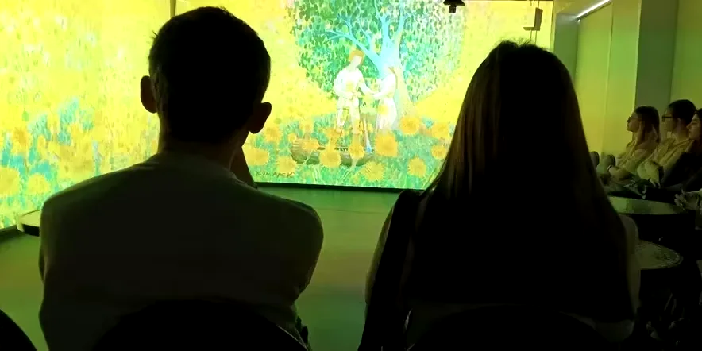
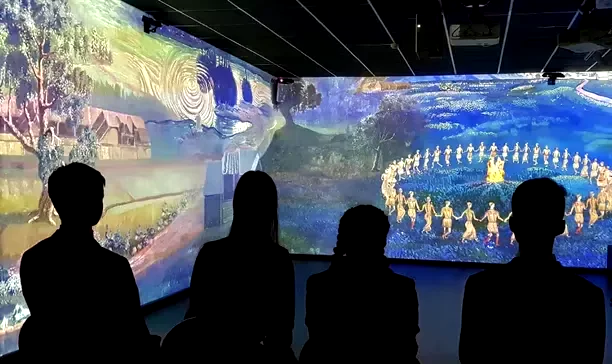
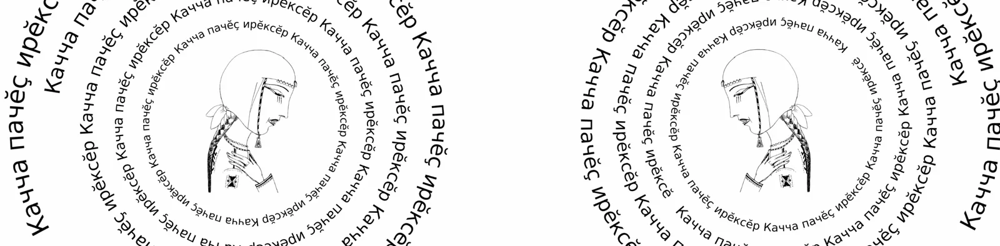

Narspi · «Нарспи»
Cheboksary · Raduga Cultural and Exhibition Centre · 2024
A series of animations made with neural networks.
This multimedia exhibition based on Konstantin Ivanov’s poem Narspi combines painting, poetry, music and digital technology. It was created by the Raduga Cultural and Exhibition Centre as part of Parallel Worlds of Poetic Art.
I worked on animating images with neural networks.
Photos and Images



